Notation Design: Representing Self-Repair in Simplified Box Notation
1 The Mechanism of CORRECTION + CONJUNCTION
1.1 Component Definition
1.1.1 CORRECTION
By adopting the definition by Lascarides & Asher (2009), CORRECTION is considered as divergent (non-veridical) subordinating rhetorical relation embedding a denial, as quoted here:
Asher and Lascarides (2003, p363) stipulates that in the absence of divergent rhetorical relations (in other words, speech acts of denial such as Correction and Counterevidence), all the content is agreed upon.
and:
Let 〈Π, F, last〉 be an SDRS. Furthermore, where π1, π2 ∈ Π, we say that π1 > π2 iff either: (i) R(π1, π2) is within the range of F , where R is a subordinating relation (e.g., Q-Elab, Plan-Elab, IQAP, Correction, Background, Elaboration, Explanation); or …
According to the same paper, the semantics of Correction is defined as
(w, f) \llbracket \mathit{Correction}(\pi_1, \pi_2) \rrbracket_m (w', g) \text{ iff } (w, f) \llbracket (\neg K_{\pi_1}) \land K_{\pi_2} \land \varphi_{\mathit{Correction}(\pi_1, \pi_2)} \rrbracket_m (w', g)
1.1.2 The two tasks of CORRECTION
A single CORRECTION token carries two distinct jobs. They are told apart structurally. Annotating the separator itself (e.g. CORRECTION-intra) would violate SBN’s design philosophy, which admits only the fixed separator inventory.
| Intra-turn self-repair | Cross-turn repair / correction | |
|---|---|---|
| Structural signature | has a sibling CONJUNCTION |
no sibling CONJUNCTION |
What CORRECTION does |
quarantines the reparandum | Lascarides & Asher proper: denies \pi_1, commits \pi_2 |
What CONJUNCTION does |
merges the repair and everything after it back into the box one level above CORRECTION |
n/a |
Recognition, not disambiguation. CONJUNCTION has one semantics throughout SBN: per Bos (2021, 2023) it does not open a new DRS, it merges subsequent material into the DRS of its target box (cf. Zeevat 1991 on DRS merging). This holds identically whether or not a CORRECTION precedes it — there is no separate “repair-CONJUNCTION” reading. What differs is the discourse configuration: when a CONJUNCTION shares a parent box with a CORRECTION, the merge it performs happens to resolve a self-repair, because its target is exactly the box that was live before the reparandum was quarantined. Tooling that needs to detect that a CONJUNCTION is part of a repair (for QC or scoring) can use parent-box co-occurrence with CORRECTION as its test — but that is a test for recognising a repair configuration, not a fork in what CONJUNCTION means.
On the direction of the relation. The parser emits box-to-box edges as target_box → new_box. In the cross-turn case this means the connector’s target is \pi_1 (denied) and the newly opened box is \pi_2 (committed), reflecting the argument order of the definition above, so no extra convention is needed. In the intra-turn case the newly opened box holds the quarantined reparandum, and the Correction relation proper is recovered from the CORRECTION/CONJUNCTION pair rather than from the single edge.
1.2 Fundamental Rules of SBN
- Accessibility: (a) neither positive nor negative indices can enter negated context, and (b) only negative indices in negated contexts can refer to discourse referents outside the negation.
1.2.1 Clarifications
The rule above is quoted verbatim from Bos (2021). The following are operational clarifications of it, plus one counting rule of SBN.
C1: Index counting is linear and boxes never reset it. Role -n / Role +n counts all preceding concepts in raw sequence order. Separators do not reset, restrict, or partition the counting domain; concepts sitting in already-closed, non-ancestor sibling boxes still occupy positions and still count.
Do not conflate the two index spaces: angle brackets index boxes, +/- index concepts. Proposition >1 and CONTINUATION <0 are box pointers, not concept indices, which is why a Proposition >1 target can sit two or more concept positions forward.
C2 — “Outside the negation” means an ancestor box. Referents in sibling boxes are equally inaccessible, even when they precede the current concept in linear order.
C3 — CONJUNCTION boundaries are permeable, CORRECTION boundaries are not. A positive index may cross into a CONJUNCTION box, because CONJUNCTION merges rather than subordinates; PMB gold does this routinely (p01/d3366: leave.v.01 … Time +2 … CONJUNCTION <2 time.n.08 DayOfWeek monday). A positive index shall never cross into or out of a CORRECTION box. See the repair toolkit below for how to avoid it.
C4 — Under certain conditions, the content nested in aCORRECTION box can be referred to. According to SBN, words include definiteness and proper noun can project to the highest level (BOX 0), which provides potential base for pronouns appearing after the reparandum and the repair to refer back to them. Another case is generics. It is a known limitation in current SBN. However, in the repair-aware SBN notation, we take it as solved. This is where CORRECTION genuinely differs from NEGATION, and it is a positive property of the relation, not a loophole. In “My favourite dessert is banana bread, actually, cherry pie. — They are both good desserts,” the plural anaphor picks up the quarantined reparandum, and the discourse is perfectly felicitous. Quarantining a reparandum removes it from what the speaker commits to; it does not remove it from the discourse referent domain.
C5 — The CONJUNCTION box has a tail. Everything from CONJUNCTION up to the next separator stays inside that box, including material that has nothing to do with the repair (in the subject-repair example below, the predicate play.v.01, its tense referent and its object all land there). Because CONJUNCTION merges, this is semantically equivalent to putting that material directly in the box one level above CORRECTION (the box the merge targets, not necessarily BOX0; under a NEGATION, for instance, that target is the negated box, see the Negation case below).
C6 — ThemeOf / TimeOf / MannerOf / Co-ThemeOf are extensions of this project, not PMB 5.1.0 practice. The inverted roles actually attested in gold are AttributeOf (1802), PartOf (572), SubOf (120), ColourOf (80), MadeOf (38), InstanceOf (37), ContentOf (4), CauserOf (2), FeatureOf (1), AgentOf (1). ThemeOf, TimeOf, MannerOf and Co-ThemeOf occur zero times. Relying on them to avoid positive indices is sound, but note that to_penman_string normalises Of → -of only for members of SBNSpec.INVERTIBLE_ROLES; an inverted role missing from that set is scored by Smatch as a wholly different edge.
1.3 Rules of Annotating Self-Repair
- Always use
CORRECTIONto quarantine the reparandum, and useCONJUNCTIONto merge the content afterwards back to the upper context. - Always follow the Fundamental Rules of SBN
- Always ignore interregna in the transcription, but in the cases where they exsit, retain them in the annotation on the right hand side of
%. They should be put in the comment area ofCONJUNCTIONseparator, making it roughly between the reparandum and the repair, reflecting the natural language order. Common English interregna include but are not limited to “I mean”, “well”, “actually”, “no”, and “in fact”. - Only material the speaker actually uttered within the reparandum span belongs inside the
CORRECTIONbox. - Mind the two ways a
%can break the parse.SBNSpec.COMMENTis the three-character string" % ", so a%is recognised as a comment marker only when it has whitespace on both sides.- A line-initial
%is not a comment — it is tokenised as SBN and aborts the whole document. Write standalone comment lines as%%%(SBNSpec.COMMENT_LINE). - A trailing
%with nothing after it is likewise not a comment, for the same reason: there is no space following it. Leave the column empty rather than writing an empty marker for alignment.
- A line-initial
1.3.1 The repair toolkit
Clarification C3 forbids a positive index from crossing a CORRECTION boundary. Four devices keep annotations on the right side of that constraint. They are not interchangeable alternatives: the first three each answer a different question, and the choice among them is determined by which direction the offending link runs. Only the fourth is a fallback in the ordinary sense.
Diagnose first, then apply:
| # | Situation | Device | Notes |
|---|---|---|---|
| ① | The argument had not yet been uttered when the reparandum was abandoned. This is more commonly seen in VP self-repairs | Leave the role unwritten | First choice, and the linguistically correct analysis: the speaker never committed to that argument under the abandoned plan. Attested in PMB gold |
| ② | A concept outside the CORRECTION box must link to the reparandum inside it |
Invert the role (ThemeOf, TimeOf, Co-ThemeOf, …) |
Puts the role on the inner concept so it points backward into an ancestor box. Cf. C6 |
| ③ | What is being repaired is an edge label (a preposition, a case role, etc.), not a concept | Dummy concept + EQU |
Bos’s own device, also used for logical disjunction in the Sequence Notation paper. SBN has no way to place a bare role inside a box |
| ④ | None of the above applies | Movement: reorder so the target precedes the CORRECTION, turning the index negative |
Last resort. It breaks the surface-order alignment the notation otherwise preserves, and it inflates index magnitudes |
Why ①–③ cannot be swapped for one another. First, the structure both bullets below turn on: CORRECTION <1 and CONJUNCTION <2 both resolve to the same target box (the box live before CORRECTION opened), so the box they each open — the CORRECTION box and the CONJUNCTION box — are siblings, neither an ancestor of the other.
- ② only fixes inbound links (a concept in an ancestor box pointing into the reparandum) — inverting the role turns that into a negative index that still terminates on an ancestor, which C2 always permits. It cannot fix an outbound link, i.e. a concept inside the
CORRECTIONbox that needs to reach a concept in the siblingCONJUNCTIONbox. Invertingput.v.01 Theme +2 → ball.n.01yieldsball.n.01 ThemeOf -n: the index sign flips, but the target is still the siblingCORRECTIONbox, not an ancestor, so C2 still blocks it. Outbound links are fixed by ① or ④ only. - ① cannot fix an inbound link. If the reparandum is the argument (an object repair, say), declining to write the role leaves it a dangling concept with no edges at all.
- ④ cannot fix an inbound link either: moving the reparandum before the
CORRECTIONtakes it out of the box that is supposed to quarantine it.
On ④’s cost: index magnitude grows monotonically with movement, and SBNSpec.INDEX_PATTERN matches only a single digit, so an index that reaches -10 or beyond is silently truncated to its first digit rather than raising an error. Prefer ①–③ wherever they apply.
2 Covered Cases
For demonstration purpose, all the synstets in the examples are written as .01, with a few exceptions, which does not represent the actual synset in WordNet. ## One-Sentence Cases
2.0.1 SV Sentence
“The boy sneezed, I mean, coughed”
boy.n.01 % The boy
time.n.08 TPR now %
CORRECTION <1 %
sneeze.v.01 Agent -2 Time -1 % sneezed,
CONJUNCTION <2 % I mean,
cough.v.01 Agent -3 Time -2 % coughed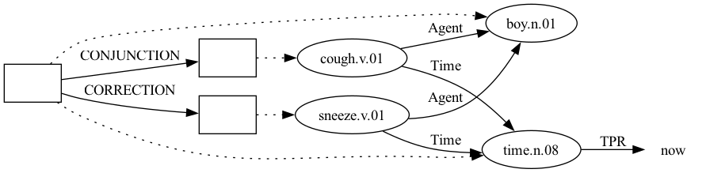
2.0.2 SVO Sentence
2.0.2.1 Subject Self-repair
“Josh, no, Mary plays tennis well”
entity.n.01
CORRECTION <1
male.n.02 Name "Josh" EQU -1 % Josh,
CONJUNCTION <2 % no,
female.n.02 Name "Mary" EQU -2 % Mary
play.v.01 Agent -3 Time +1 Theme +2 Manner +3 % plays
time.n.08 EQU now %
tennis.n.01 % tennis
well.r.01 % well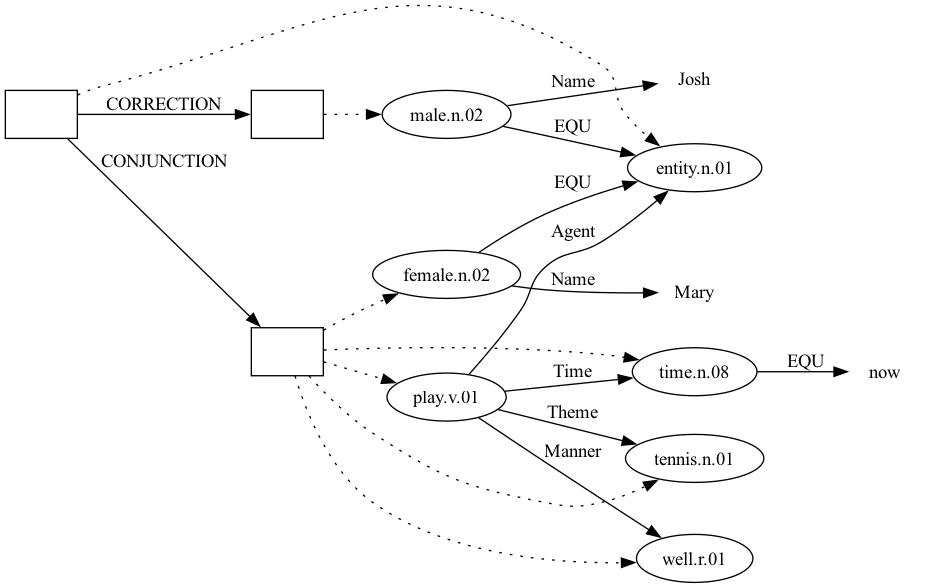
The manner adverb attaches through the Manner role, following gold (p94/d2703, “I play the piano well.”): play.v.07 Agent -1 Time +1 Theme +2 Manner +3 time.n.08 EQU now piano.n.01 well.r.10.
This example also illustrates clarification C5: the predicate, its tense referent, its object and the adverb all sit inside the CONJUNCTION box, not BOX 0. However, they will be merged back to the box that CONJUNCTION indexes to.
2.0.2.2 Verb Self-repair
“The cat chases, actually, hunts the rat”
cat.n.01 % The cat
time.n.08 EQU now %
CORRECTION <1 %
chase.v.01 Agent -2 Time -1 % chases,
CONJUNCTION <2 % actually,
hunt.v.01 Agent -3 Theme +1 Time -2 % hunts
rat.n.01 % the rat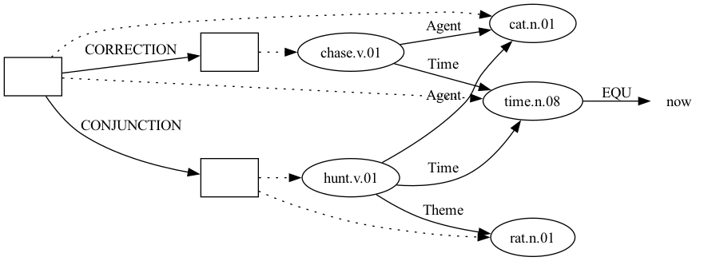
chase.v.01 carries no Theme. This is device ① of the repair toolkit, and it is the correct analysis rather than a concession: the rat was never uttered under the abandoned “chases” plan. PMB gold does the same for arguments that go unrealised: p62/d1986, “I also did not call.”, is annotated call.v.03 Agent … Time … with no recipient, even though call.v.03 is transitive.
2.0.2.3 Object Self-repair
“I ordered a banana bread, I mean, a cherry pie”
person.n.01 EQU speaker % I
time.n.08 TPR now %
order.v.01 Agent -2 Time -1 % ordered
CORRECTION <1 %
banana_bread.n.01 ThemeOf -1 % a banana bread,
CONJUNCTION <2 % I mean,
cherry_pie.n.01 ThemeOf -2 % a cherry pie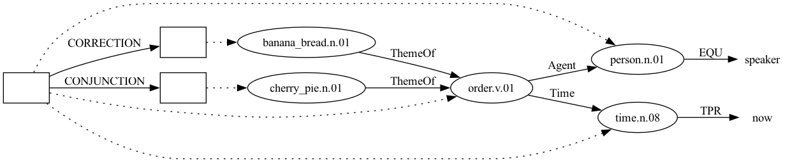
ThemeOf here is device ② of the toolkit: the object is the reparandum, so it must be linked, and inverting the role lets both candidate objects point backward at order.v.01 in Box 0 instead of forcing a positive index down into the CORRECTION box.
2.0.3 Negation
“I didn’t order a banana bread, I mean, a cherry pie”
person.n.01 EQU speaker % I
time.n.08 TPR now
NEGATION <1 % didn't
order.v.01 Agent -2 Time -1 % order
CORRECTION <1
banana_bread.n.01 ThemeOf -1 % a banana bread,
CONJUNCTION <2 % I mean,
cherry_pie.n.01 ThemeOf -2 % a cherry pie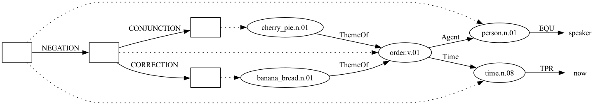
Note the resulting box structure: BOX0 →NEGATION→ BOX1, BOX1 →CORRECTION→ BOX2, BOX1 →CONJUNCTION→ BOX3. Because CONJUNCTION <2 counts back two boxes from the box it opens, the repair merges into the negated box rather than the matrix box, which is what the sentence means. Getting this wrong is easy and produces no parse error.
(ThemeOf -1 needs the space. ThemeOf-1 is tokenised as a single unknown token and aborts the parse.)
2.0.4 Adjunct
“The class is on Monday, no, on Tuesday”
class.n.01 % The class
time.n.08 EQU now %
be.v.01 Theme -2 Time -1 % is on
CORRECTION <1 %
time.n.08 DayOfWeek monday TimeOf -1 % Monday,
CONJUNCTION <2 % no,
time.n.08 DayOfWeek tuesday TimeOf -2 % on Tuesday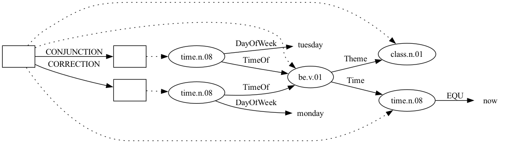
The role is DayOfWeek, and its value is a bare lower-case constant, not a quoted string. Gold data writes time.n.08 DayOfWeek monday (16 occurrences across the weekdays). There is no Day role in SBNSpec.ROLES, so Day "Monday" aborts the parse.
2.0.5 Preposition replacement
“I ran to, I mean, from the school”
What is repaired here is not a concept but an edge label — Destination gives way to Source. SBN has no way to place a bare role inside a box, so this calls for device ③: introduce a dummy concept, tie it to the event with EQU, and hang the competing role on the dummy. Bos (2021) uses the same construction for logical disjunction.
person.n.01 EQU speaker % I
time.n.08 TPR now %
run.v.01 Theme -2 Time -1 % ran
school.n.02 % the school
CORRECTION <1 %
entity.n.01 EQU -2 Destination -1 % to,
CONJUNCTION <2 % I mean,
entity.n.01 EQU -3 Source -2 % from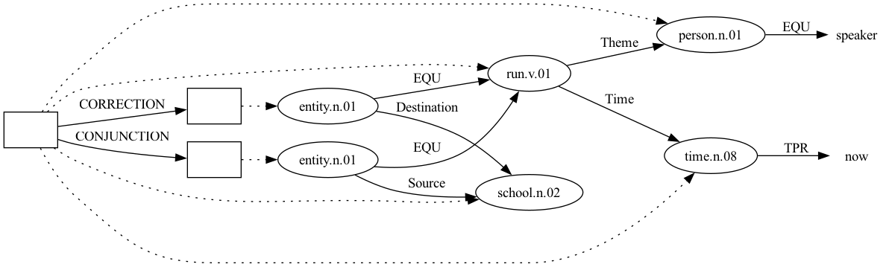
Both dummies are EQU to the same running event. Inside the CORRECTION box the dummy bears Destination and is denied; inside the merged box it bears Source and is committed. Every index is negative and every target lies in the superordinate BOX0, so no accessibility constraint is touched.
The dummy must be a legal synset: entity.n.01 is the general-purpose placeholder of the notation and occurs 1315 times in gold, whereas event.v.01, being a more intuitive dummy for a predicate, is not a WordNet entry since it has no verbal sense. Following SBN routine, we retain the usage of entity.n.01, instead of introducing a new top concept for all activities, e.g., action.v.01.
Note also that PMB never reifies a preposition as its own node in the ordinary case; Source and Destination attach directly to the verb (fly.v.01 … Source +2 Destination +3). The dummy is introduced here only because the repair needs two mutually exclusive versions of one edge.
2.0.6 Universal Quantification - Donkey sentence
“If a farmer owns a donkey, he beats, I mean, feeds it.” Notice the difference with the SBN of verb self-repair. In the current case, the reparandum verb beat locates in the consequence (right) clause. It means the reparandum needs to travel across two boxex (NEGATION and CORRECTION) to reach all the nodes.
NEGATION <1 % If
farmer.n.01 % a farmer
own.v.01 Pivot -1 Theme +1 % owns a
donkey.n.01 % donkey,
NEGATION <1
entity.n.01 EQU -1 % it
CORRECTION <1
beat.v.01 Agent -4 Patient -1 % he beats,
CONJUNCTION <2 % I mean,
feed.v.01 Agent -5 Patient -2 % he feeds it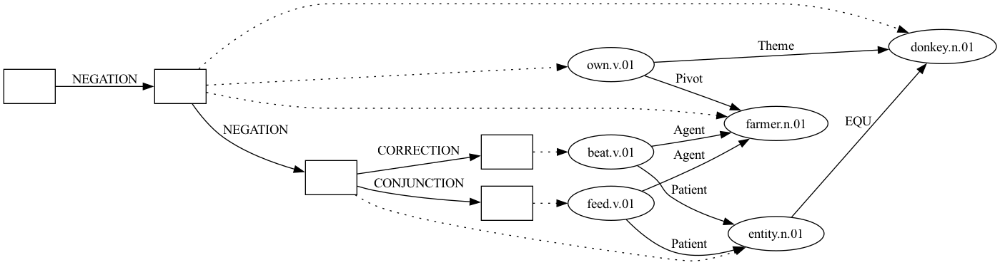
Look at the second NEGATION, the one right before entity.n.01 EQU -1 (“it”). It has to be written <1.
SBN builds a universal conditional out of two nested negations. It reads as “no donkey-owner who doesn’t beat it”, being equivalent to “every farmer who owns a donkey beats it.” The first NEGATION <1 opens BOX1 and targets BOX0 (BOX0 →NEGATION→ BOX1); BOX1 holds the restrictor, “a farmer owns a donkey.” The second NEGATION then opens BOX2. Writing <1 counts back one box from BOX2 and lands on BOX1, giving BOX1 →NEGATION→ BOX2. That is, BOX2 sits inside BOX1, not beside it. That nesting is what makes the two clauses one conditional: BOX2 (the consequent, “he beats it”) falls under the restrictor’s own negation, so the whole thing reads roughly as “there is no farmer-and-donkey pair such that he doesn’t beat it” — i.e. a universal conditional.
If the second NEGATION were written <2 instead, it would count back two boxes from BOX2 and land on BOX0: BOX0 →NEGATION→ BOX2. Now BOX1 and BOX2 both hang directly off BOX0 as siblings, each negated independently (e.g., “no farmer owns a donkey” and, separately, “he doesn’t beat it”). There are two unrelated denials instead of one conditional. The parser accepts this without complaint. Nevertheless, it’s a different, wrong meaning.
Compared to an ordinary donkey sentence without self-repair, extracted from Bos (2021): “Every farmer who owns a donkey beats it”
NEGATION -1 % Every
farmer.n.01 % farmer
own.v.01 Pivot -1 Theme +1 % who owns
donkey.n.01 % a donkey
NEGATION -1 %
beat.v.01 Agent -3 Patient +1 % beats
entity.n.01 EQU -2 % it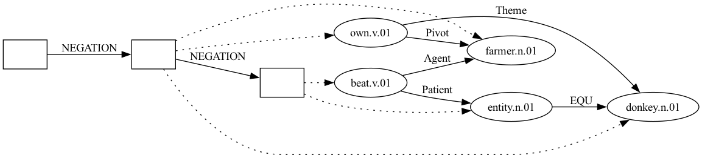
It is noteworthy that in the “ordinary” donkey sentence, the pronoun “it” follows the natural language oder by appearing by the end of the SBN sequence. However, in the sel-repair variety, it is moved forward to satisfy the two rules above.
2.0.7 Retracting and Forwarding Repairs
2.0.7.1 Retracting Repair
“Bill said you will put, I mean, you will drop the ball on the table” (Husband, 2015)
male.n.02 Name "Bill" % Bill
say.v.01 Proposition >1 Agent -1 Time +1 % said
time.n.08 TPR now
CONTINUATION <0
person.n.01 EQU hearer % you
time.n.08 TSU now % will
CORRECTION <1
put.v.01 Agent -2 Time -1 % put,
CONJUNCTION <2 % I mean,
drop.v.01 Agent -3 Time -2 Theme +1 Destination +2 % you will drop
ball.n.01 % the ball
table.n.02 % on the table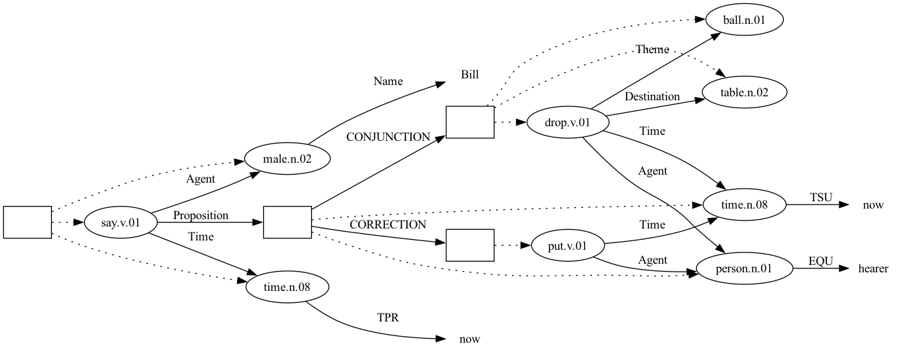
This case demonstrates device ①. Giving put.v.01 a Theme +2 and a Destination +3 reaches forward out of the CORRECTION box into a sibling, which breaks the accessibility rules. A more serious issue is the speaker abandoned the utterance after “you will put” and never said what was to be put or where, so assigning it a theme and a destination would be the annotator reconstructing an intention, not transcribing a commitment. Dropping the two roles resolves the accessibility violation and yields the more faithful analysis at the same time.
The forward indices that remain on drop.v.01 are unproblematic: drop, ball and table all sit in the same CONJUNCTION box, so nothing crosses a boundary.
PMB gold shows the same asymmetry between a subordinate and a matrix occurrence of one predicate — p79/d0205, “If you sing, we’ll sing with you.”, has sing.v.02 Agent -1 Time +1 in the antecedent box against sing.v.02 Agent -2 Time -1 Co-Agent +1 in the consequent.
2.0.7.2 Forwarding Self-Repair
“Josh drove, no, Marsha drove the old car to the church”
entity.n.01
CORRECTION <1
male.n.02 Name "Josh" EQU -1 % Josh
time.n.08 TPR now %
drive.v.03 Agent -2 Time -1 % drove,
CONJUNCTION <2 % no,
female.n.02 Name "Marsha" EQU -4 % Marsha
time.n.08 TPR now %
drive.v.03 Agent -2 Time -1 Theme +2 Destination +3 % drove
old.a.02 AttributeOf +1 % the old
car.n.01 % car
church.n.02 % to the church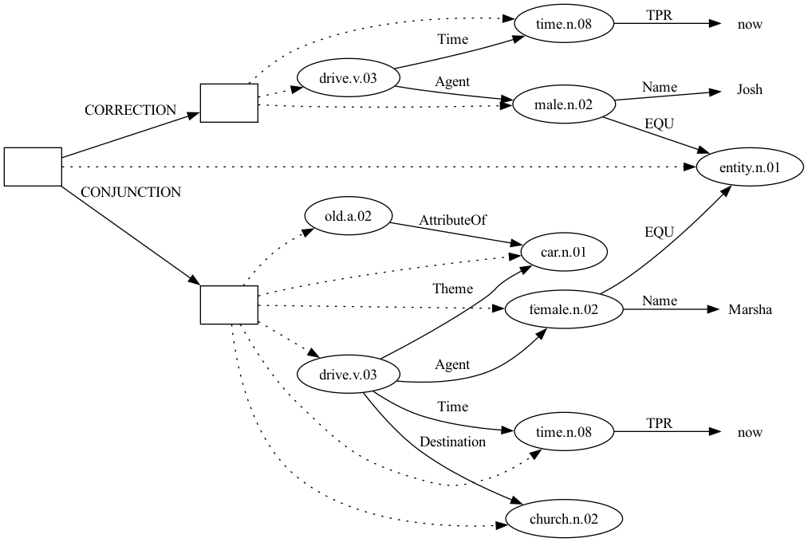
Device ① again: the car and the church were never uttered under the abandoned “Josh drove” plan, so the first drive.v.03 takes no Theme and no Destination.
Three more pitfalls worth naming, all of which parse silently with no error:
- A
Themeon the firstdrive.v.03resolved to the seconddrive.v.03(making the event its own theme), and aThemeon the second resolved toold.a.02, the adjective — both indices landed on whatever concept sat at that raw offset, not on the intended argument. - Giving the same adjective both a
Valuerole and its host concept anAttributerole creates two contradictory edges between the same pair of nodes. Gold writes a single inverted edge for an attributive adjective instead:new.a.01 AttributeOf +1 museum.n.01. Destinationbelongs on the driving event, not on the car. Gold:go.v.01 … Destination +2 city.n.01.
2.1 Multiple-Sentence (Discourse) Cases
2.1.1 Anaphora referring to both reparandum and repair
“A: My favourite dessert is banana bread, actually, cherry pie. B: They are both good desserts”
%%% Utterance 1
person.n.01 EQU speaker % A: My
favorite.a.02 Experiencer -1 Stimulus +1 % favourite
dessert.n.01 % dessert
time.n.08 EQU now %
be.v.02 Theme -2 Time -1 % is
CORRECTION <1 %
banana_bread.n.01 Co-ThemeOf -1 % banana bread, (reparandum)
CONJUNCTION <2 % actually,
cherry_pie.n.01 Co-ThemeOf -2 % cherry pie (repair)
%%% Utterance 2
CONTINUATION <1 %
entity.n.01 ANA -2 ANA -1 % B: They — picks up both reparandum and repair
time.n.08 EQU now % are
be.v.02 Theme -2 Time -1 Co-Theme +2 %
good.a.01 AttributeOf +1 % both good
dessert.n.01 % desserts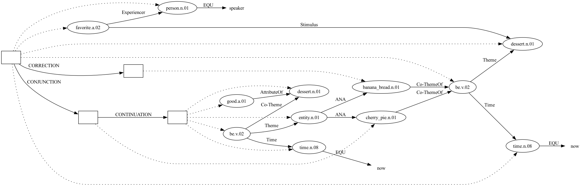
Both candidate objects now reach the copula through Co-ThemeOf (device ②), symmetrically.
Co-ThemeOf is not part of stock PMB and has to be declared in sbn_spec.py in both ROLES and INVERTIBLE_ROLES. Adding it to ROLES alone lets the sequence parse but leaves the Penman output as :Co-ThemeOf, which Smatch will not normalise against a gold :Co-Theme. Cf. C6.
The final dessert.n.01 needs the copula to attach to; without it the concept carries no edges at all and “desserts” contributes nothing to the representation. Gold writes plural predicate nominals this way — “Those are not fish.” is entity.n.01 … be.v.01 Theme -1 Time +1 Co-Theme +2 time.n.08 EQU now fish.n.01.
This example is the evidence for clarification C4: entity.n.01 ANA -2 reaches into the CORRECTION box to pick up the discarded reparandum, and the discourse is entirely natural. To mark “both” explicitly, gold would add Quantity 2 to the entity.n.01 (“My parents are both doctors.”).
2.1.2 Intra-utterance Self-Repair Combined with Cross-turn
“A: Joe bought a Ferrari, I mean, a Jaguar, as a birthday gift. B: No, he bought it as a wedding gift.”
%%% A's utterance
male.n.02 Name "Joe" % Joe
time.n.08 TPR now %
buy.v.01 Agent -2 Time -1 Attribute +3 % bought
CORRECTION <1 % [intra-turn: has a sibling CONJUNCTION]
car.n.01 Name "Ferrari" ThemeOf -1 % a Ferrari (reparandum)
CONJUNCTION <2 % I mean,
car.n.01 Name "Jaguar" ThemeOf -2 % a Jaguar (merged back into BOX0)
gift.n.01 Of +1 % as a
birthday.n.01 % birthday gift
%%% B's utterance
CORRECTION <1 % No, [cross-turn: no sibling CONJUNCTION]
male.n.02 EQU -7 % he
buy.v.01 Agent -1 Theme -4 Attribute +1 % bought it
gift.n.01 Of +1 % as a
wedding.n.01 % wedding gift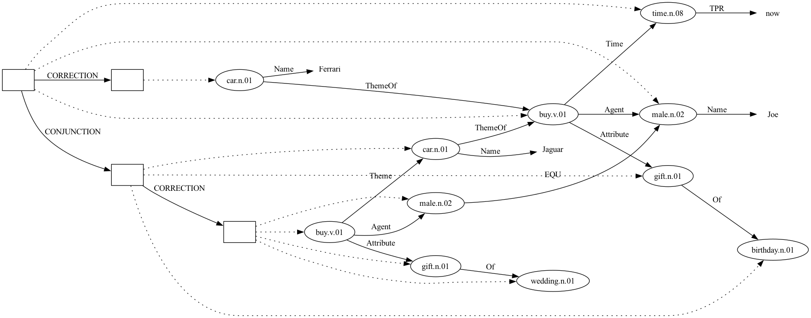
Both uses of CORRECTION occur in one sequence, and the structural test of the Mechanism section separates them without any annotation on the token itself: the first has a sibling CONJUNCTION and therefore quarantines a reparandum; the second has none and is the Lascarides & Asher relation proper.
The second one is written <1, which yields BOX2 →CORRECTION→ BOX3. Its target (\pi_1 in Lascarides & Asher’s terms) is A’s CONJUNCTION box — the box that, per C5, holds gift.n.01 Of birthday.n.01, which is exactly what B objects to. As C5 already established, this CONJUNCTION box has no content of its own. Everything in it is merged into whatever box it targets, so “targeting A’s CONJUNCTION box” means the denial reaches that merged content. Writing <3 would instead target BOX0 and deny A’s utterance wholesale. Both parse, and after the merge the two readings share the same meaning but are different graphs, scored differently by Smatch; <1 is the choice made here, because it localises the denial to the constituent under dispute. As with C6, this construction has no PMB precedent (it does not occur in gold), so it is a project-internal stipulation rather than received annotation practice — fixed for the same reason C5 is fixed: leaving it open would let two annotators produce differently-scored graphs for the same discourse.
3 Noted Limitations
3.1 Tense and Aspect
“She went to, well, has been to the church”
Reason:
3.2 Rhetorical Relation Replacement
“I helped my mum when, I mean, even though I was busy”
Reason:
3.3 Quantifier Replacement
“Every, no, some dishes are tasty”
Reason:
3.4 Modal Verb
“I think you would, well, should work harder”
Reason:
3.5 Discontinuous (Delayed) Repair
“I bought three apples from Lidl yesterday, actually, four”
Every case covered so far is an instant repair: the interregnum follows its reparandum immediately, so CORRECTION opens right where the trouble source ends. Here the reparandum is just Quantity 3 on apple.n.01 — device-wise no different from the Adjunct case’s DayOfWeek monday → tuesday — but “actually, four” arrives only after “from Lidl yesterday” has already been uttered and committed, and that material is not itself being repaired.
CORRECTION can only quarantine what comes after it in the sequence. Opened where “actually” actually occurs, it can no longer reach back and quarantine “three”. It is already asserted. Opened right after “three” instead (mimicking the instant-repair cases), it quarantines “from Lidl” and “yesterday” along with it, wrongly marking them as retracted. Device ④ does not rescue this either: it would have to postpone an entire adjunct span past the whole CORRECTION/CONJUNCTION pair, not just move one argument’s index, which is a far larger break from surface order than anything the toolkit currently licenses.